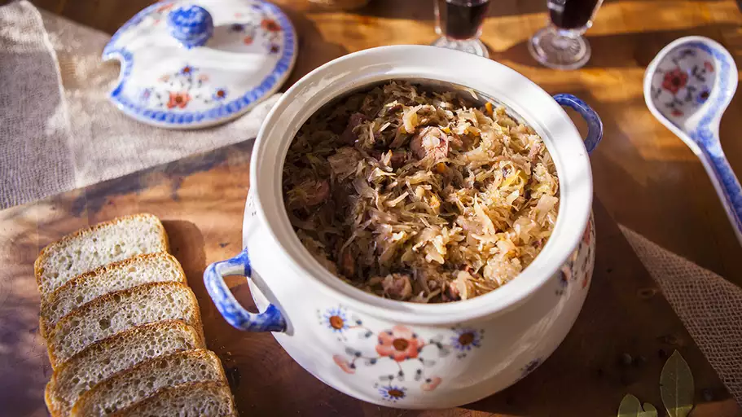

Bigos (Polish Hunter's Stew) Recipe

Description
Bigos is almost a Polish national dish. This is a traditional recipe from Poland. Bigos is a rich flavorful stew with sauerkraut, Polish sausage, beef, pork, red wine, caraway seeds and more. The longer it cooks, the better it tastes.
Ingredients
- 9 cups boiling water, divided
- 3 pounds sauerkraut - rinsed, drained and chopped
- 15 pitted prunes
- 5 whole allspice berries
- 3 bay leaves
- 1 cup dried mushrooms
- 2 tablespoons vegetable oil
- 2 onion, chopped
- 1 Polish sausage, sliced
- ½ pound beef stew meat, cubed
- ½ pound boneless pork shoulder, cubed
- ½ cup bacon strips, diced
- 1 tablespoon caraway seeds
- 1 teaspoon dried marjoram
- salt and pepper to taste
- ¾ cup red wine
- 3 tablespoons tomato paste (Optional)
Steps
- Place sauerkraut in a large pan or casserole dish and pour in 4 cups of boiling water. Add prunes, allspice, and bay leaves. Simmer until Sauerkraut is soft, about 50 minutes.
- Pour about 1 cup of boiling water over mushrooms and soak to rehydrate, about 30 minutes. Drain and chop mushrooms, reserving the liquid.
- Heat oil in a frying pan over medium to high heat. Add onion and sausage. Saute while stirring until onion is soft and sausage is browned, about 5 minutes.
- In a separate pan, bring about 4 cups of water to a boil. Add beef, pork, and bacon. Simmer until cooked through for 20 minutes, then drain.
- When sauerkraut is soft, add the drained meat mixture, sausage-onion mixture, and soaked mushrooms; mix well. Simmer uncovered over low heat, about 20 minutes.
- Pour in red wine and cook for 15 minutes until flavors are well blended. Season with caraway seeds, marjoram, salt, and pepper. Stir in tomato puree. If the stew is too dry, pour in some of the water reserved from soaking the mushrooms, and simmer so flavors combine, about 5 minutes.